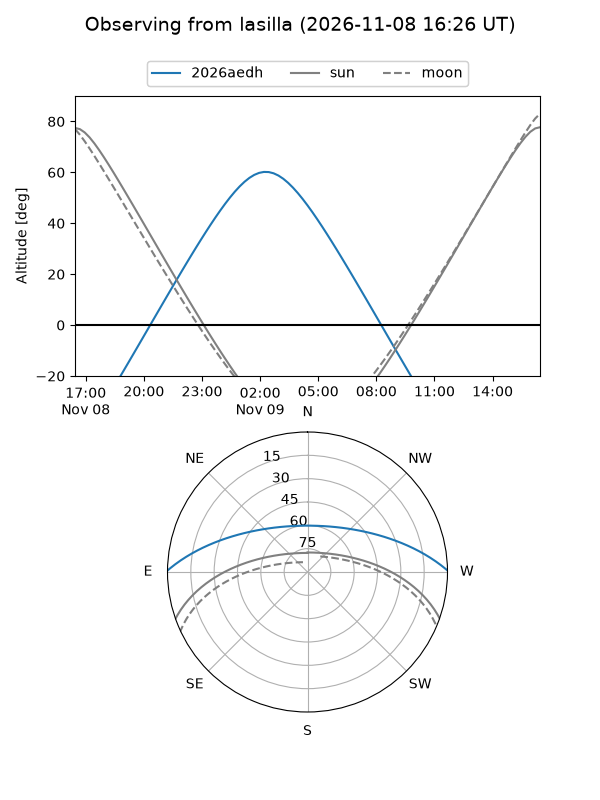
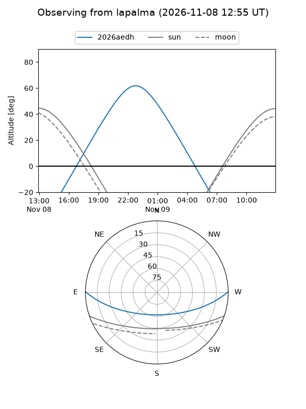
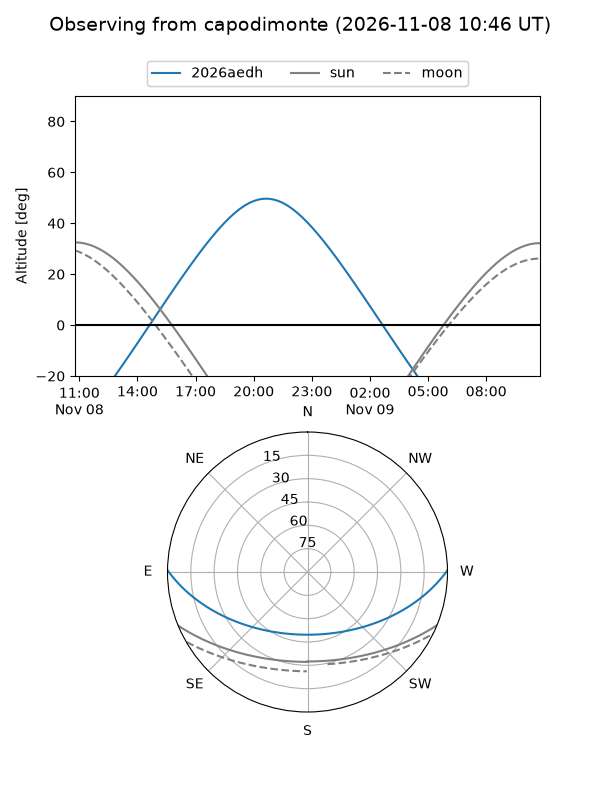
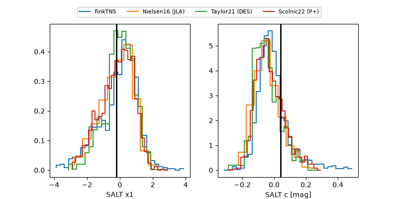

2026aedh
Target 2026aedh at 2026-11-09 04:59
Aliases and brokers:
FINK-ZTF: ztf.fink-portal.org/ZTF26aceaevy
Lasair-ZTF: lasair-ztf.lsst.ac.uk/objects/ZTF26aceaevy
ALeRCE-ZTF: alerce.online/object/ZTF26aceaevy
YSE-PZ: ziggy.ucolick.org/yse/transient_detail/2026aedh
TNS name: wis-tns.org/object/2026aedh
Direct TNS query: direct search
alt names
ZTF26aceaevy (ztf,fink_ztf)
2026aedh (tns,yse)
ATLAS26mco (atlas)
Coordinates:
equatorial (ra, dec) = 11.5384,+0.39266
equatorial (HMS+DMS) = 00:46:09.22,+00:23:33.56
galactic (l, b) = (120.0749,-62.44977)
Flags:
peak dt: +8.9
Photometry:
last ztfr=19.64
3 ztfr detections
Lightcurve
Visibility



Additional plots
